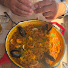
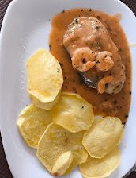
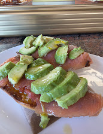
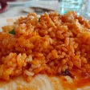
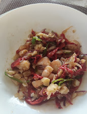

Cocina valenciana en San Vicente del Raspeig
La Cazuela de Manuela: menú del día casero en el Polígono Canastell, San Vicente del Raspeig
Comida casera y recién hecha en pleno Polígono Canastell. Cada día un menú distinto para elegir, con primero, segundo, ensalada, bebida, pan y postre o café por 12 €. Y los viernes, arroz.



Destacado de la carta
Arroz de los viernes
Somos cocina valenciana, y en una casa valenciana el viernes huele a arroz. Por eso es uno de los destacados de nuestra carta.
Cada viernes, arroz.
Reservar arrozDe nuestra cocina
Platos caseros, como en casa
Algunos de los platos que han salido de nuestra cocina. Desliza para verlos.


La receta del menú
Cómo funciona el menú de 12 €
- 1
Elige un primero
Arroces, caldos, pasta o verdura. Cada día hay varios para elegir.
- 2
Elige un segundo
Carne o pescado, cocinado esa misma mañana.
- 3
Ensalada, pan y bebida
Incluidos, sin suplementos.
- 4
Postre o café
Para terminar. Todo por 12 € y vuelta al trabajo.
Lo que dicen de nosotros
0Valoración media de 0 opiniones en Google Maps
Te esperamos a mediodía
Visítanos en el Polígono Canastell
Dirección
C. el Martillo, 14
03690 Sant Vicent del Raspeig, Alicante
Horario
Abrimos a las 7:00
Menú del día a mediodía
Teléfono
- Comer allí
- Para llevar
- A domicilio
Preguntas frecuentes
¿Dónde está La Cazuela de Manuela?
En C. el Martillo, 14, en el Polígono Canastell (03690 Sant Vicent del Raspeig, Alicante).
¿Cuánto cuesta el menú del día?
12 € con todo: primero, segundo, ensalada, bebida, pan y postre o café.
¿Cambia el menú cada día?
Sí. Cada día hay varios primeros y segundos para elegir, todo casero y recién hecho. Lo publicamos en Instagram.
¿Se puede pedir para llevar o a domicilio?
Sí. Puedes comer en el restaurante, pedir para llevar o a domicilio. Llámanos al 965 43 63 80.